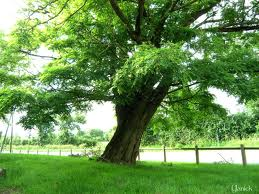

Robinier ou faux acacia

Robinier ou faux acacia (Robinia pseudoacacia de la famille des Fabacées)
Attention : hautement toxique par ingestion pour le Korat !
Partie toxique pour les chats en général et le Korat en particulier :
Écorces et branches.
Symptômes du processus pathologique :
Coliques, problèmes intestinaux, fatigue, respiration difficile, problèmes d'équilibre, dilatation des pupilles, inflammation des reins, insuffisance cardiaque.
Origine de la toxicité (principe actif) :
Glycoside soit robitine et alcaloïde cyanogénique soit robinine.